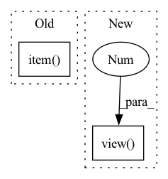

Pattern ID :13878

Before Change
rem_grads = self.grads_per_elem[remainSet]
gains = self.eval_taylor_modular(rem_grads)
// Update the greedy set and remaining set
bestId = remainSet[torch.argmax(gains).item()]
greedySet.append(bestId)
remainSet.remove(bestId)
self.numSelected += 1
After Change
gains = self.eval_taylor_modular(rem_grads)
// Update the greedy set and remaining set
//_, maxid = torch.max(gains, dim=0)
_, indices = torch.sort(gains.view(-1), descending=True)
bestId = [remainSet[indices[0].item()]]
greedySet.append(bestId[0])
remainSet.remove(bestId[0])
In pattern: SUPERPATTERN
Frequency: 3
Non-data size: 2
Instances
Fragment ID: 46152896
Project Name: decile-team/cords
Commit Name: 0152bcb825e6725f65a8ed9be1610dded59ebf7a
Time: 2021-01-06
Author: krishnateja.killamsetty@utdallas.edu
File Name: cords/selectionstrategies/supervisedlearning/glisterstrategy.py
M Class Name: GLISTERStrategy
N Class Name: GLISTERStrategy
M Method Name: select(3)
N Method Name: select(3)
M Parent Class: DataSelectionStrategy
N Parent Class: DataSelectionStrategy
M File Name: cords/selectionstrategies/supervisedlearning/glisterstrategy.py
N File Name: cords/selectionstrategies/supervisedlearning/glisterstrategy.py
M Start Line: 198
M End Line: 271
N Start Line: 195
N End Line: 269
'>
Before Change
else:
outputs = model(inputs, labels=labels, position_ids=position_ids, token_type_ids=segment_ids)
lm_loss = outputs[0]
eval_loss += lm_loss.mean().item()
nb_eval_steps += 1
eval_loss = eval_loss / nb_eval_steps
perplexity = torch.exp(torch.tensor(eval_loss))
After Change
// Same behavior as modeling_bart.py, besides ignoring pad_token_id
ce_loss_fct = torch.nn.CrossEntropyLoss(ignore_index=args.mlm_ignore_index)
loss = ce_loss_fct(lm_logits.view(-1, lm_logits.shape[-1]), labels.view(-1))
eval_loss += loss.mean().item()
nb_eval_steps += 1
'>
Fragment ID: 46152898
Project Name: stanford-oval/genienlp
Commit Name: b84a6548a69fd9f62652eed1c74fd4b1fdb8b65b
Time: 2020-11-15
Author: mehrad@stanford.edu
File Name: genienlp/paraphrase/run_lm_finetuning.py
M Class Name: AnonimousClass
N Class Name: AnonimousClass
M Method Name: evaluate(5)
N Method Name: evaluate(5)
M Parent Class:
N Parent Class:
M File Name: genienlp/paraphrase/run_lm_finetuning.py
N File Name: genienlp/paraphrase/run_lm_finetuning.py
M Start Line: 318
M End Line: 344
N Start Line: 330
N End Line: 369
'>
Before Change
print(input.size(), output.size())
loss = criterion(output, target)
print(loss.item())
def _test_chimeranet():
pass
After Change
output = model(input)
print(input.size(), output.size(), target.size())
output = output.view(batch_size, -1, embed_dim)
target = target.view(batch_size, n_sources, -1).permute(0, 2, 1)
loss = criterion(output, target, batch_mean=False)
print(loss)
'>
Fragment ID: 46152899
Project Name: tky823/dnn-based_source_separation
Commit Name: 8860d8d92de4ba4390fa89247619810b0c821fe6
Time: 2021-11-22
Author: delta9guitar97@gmail.com
File Name: src/models/deep_clustering.py
M Class Name: AnonimousClass
N Class Name: AnonimousClass
M Method Name: _test_deep_embedding(0)
N Method Name: _test_deep_embedding(0)
M Parent Class:
N Parent Class:
M File Name: src/models/deep_clustering.py
N File Name: src/models/deep_clustering.py
M Start Line: 202
M End Line: 219
N Start Line: 202
N End Line: 232